Резово
Единственото интересно нещо е да се види турската граница. Безсмислено големия турски флаг плаши с неразумността си. За това снобарско и затворено село се носят се много легенди. Едната е как в миналото Жоржи Шоумена е ходел на плаж с приближените си, е заставал един охранител и не е допускал други хора на плажа... Другата е как местните мутри са всевластни. Веднъж нов полицай на караула вижда в делечината забързано съмнително Audi и решава да го спре. Аудито намалява, задния прозорец се отваря и местната мутра крещи "Ей, копелдак, още веднъж ако вдигнеш тая палка, ще ти истине мястото"... Аудито дава газ и си продължава.
Пътя- 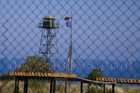
Наблюдателницата - 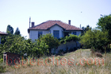
Обикновена къща - 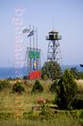
Българската граница - 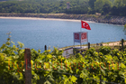
Турската граница - 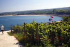
Турски плаж - 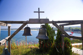
Кръст - 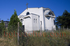
Параклис - 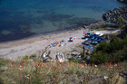
Плаж - 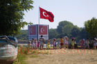
Турския бряг - 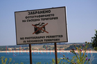
Снимането забранено - 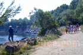
Разходка - 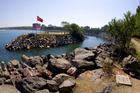
Реката - 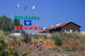
Граница на ЕС - 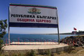
Община Царево - 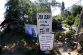
Приятелски Клуб Далян - 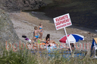
Къпането забранено - 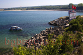
Границата - 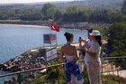
Резово случайна снимка - 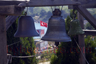
Камбани - 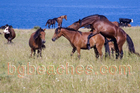
Конски романс - 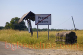
Край